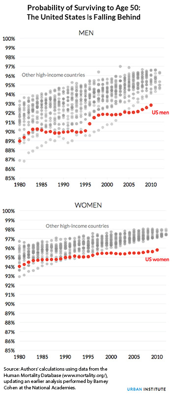
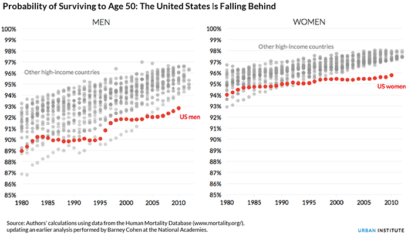

The Picture of Health:
At Home, at Work, at Every Age, in Every Community


The United States spends nearly twice as much per person on health care as other rich nations, but we’re no healthier for it. Americans are sicker and die younger than people in other high-income countries. We have higher rates of infant mortality, obesity, heart disease, and AIDS. We’re also more likely to die from traffic accidents, drug overdoses, and gunshot wounds.
“Study after study confirms that the health of Americans is suffering dramatically and even slipping in some cases,” according to Laudan Aron, a senior fellow at the Urban Institute.
We’re all vulnerable, regardless of age, race, or income. Even well-off Americans are less healthy than their counterparts in other countries. We’re not used to hearing this, which is why Princeton economists Anne Case and Angus Deaton caused such a stir when they reported that death rates for white, middle-aged Americans are actually rising.
It’s also why the graphic below is so startling, particularly the trend among American women.  
What’s happening to our health and survival? And what can we do to change course?
To start answering these questions, we need to broaden our understanding of health. Health is driven by much more than what happens in the doctor’s office, so our health problems can’t be solved by health care alone.
Poverty, for one thing, is bad for your health—not just because being poor makes it harder to see a doctor, but also because being poor makes it harder to afford nutritious food or a home in a safe neighborhood. For example, research shows that many children in low-income housing are subject to asthma triggers that can harm their health and prevent them from going to school. The effects of poverty on children’s health are so pernicious that some doctors have called for classifying childhood poverty as a disease.
Income is so closely tied to health that health improves with every step up the economic ladder. “The near poor are in worse health than the middle class, and the middle class are in worse health than the most affluent,” said Lisa Dubay, a senior fellow at the Urban Institute.
Differences in education work much the same way. Higher levels of education generally lead to better, higher-paying jobs, which are often stable jobs with sick leave and fewer physical health risks. And higher incomes allow people to live in better neighborhoods and send their kids to good schools, perpetuating a cycle that boosts health at every step.
We also see persistent racial and ethnic disparities in health, in part because people of color have lower incomes and fewer assets than their white counterparts. “Persistent segregation and discrimination further diminish health in communities of color by limiting access to opportunities that promote better health and increasing stressors that impede it,” said Elaine Waxman, senior fellow at the Urban Institute.
Most of us understand that what we eat and whether we exercise affects our health. But our environments—our schools, workplaces, homes, and neighborhoods—can support or constrain our choices, encourage or discourage healthy living, and shield us from or expose us to health risks.
“Health is affected by nearly everything in our lives,” Aron said, “but this also means that opportunities for better health are everywhere.”
Once you start appreciating that the broader determinants of health are everywhere, it may seem overwhelming. But as a country, we have made major changes to mitigate health risks and make it easier for people to make healthy choices—and we have to do more.
“I grew up in a tobacco state, and smoking was just a way of life when I was growing up,” Waxman said. “And now, look at all the changes we’ve made to discourage smoking. The world is truly different. You don’t smoke in bars, you don’t smoke in planes. The problem persists, but we’ve made smoking much less likely to be the default choice.”
Health from birth to old age
Every stage of life offers opportunities for promoting and protecting health. Before we’re born, our health is shaped by our parents’ health and well-being. And our earliest experiences as babies can have long-term consequences for our health as adults.
Early childhood education is one of the most promising investments for lifelong health. Education and health are closely tied: people with more education tend to live longer, healthier lives than those with less education. And being healthy improves student attendance and performance throughout childhood.
In adolescence, teenagers start to make more choices on their own. They’re more influenced by social media and by people outside their families, such as peers, coaches, and faith-based leaders.
“At these ages, many kids also experiment with alcohol, drugs, or sex, and often settle on lifelong habits relating to diet, exercise, sleep, and stress management,” Aron said. “We can support lifelong health and well-being by giving youth strong mentors; cultural and recreational opportunities; summer job programs; and other ways to learn about themselves, relationships with others, and the world.”
In adulthood, jobs can promote or harm health—for example, some jobs require more physically demanding work or are done in higher-risk environments. Whether employees get sick leave not only affects their health but also the health of their coworkers. And a parent’s ability to take time off work to care for a sick child has direct consequences for that child’s health and well-being.
Our health advantages or disadvantages compound as we age. Beyond medical care, communities can help older adults stay in their homes as they age and stay socially engaged. “We all develop health challenges as we grow older, but our ability to delay or manage them is shaped by our social and physical surroundings—for example, transportation to go to the doctor or the grocery store and the ability to stay active and socially connected,” Dubay said.
At every stage of life, social welfare and safety net programs, apprenticeship and job training programs, and policies designed to revitalize neighborhoods and schools can improve health directly or indirectly.
“Decisions about education, development, and transportation are as much about health and well-being as they are about schools, housing, and highways,” Aron said. Policymakers, employers, and community groups are recognizing this and acting on these broader opportunities to improve health.
“We can’t make headway… by focusing on a few health conditions, or a small group of people or communities,” Waxman added. “It requires that all of us act in small, medium, and big ways to preserve and promote health.”
This project was funded with support from the Lawrence & Rebecca Stern Family Foundation, Inc.
RESEARCH
LAUDY ARON; LISA DUBAY; ELAINE WAXMAN
WRITING
Serena LEI; MATTHEW JOHNSON; LYDIA THOMPSON
Photography
LYDIA THOMPSON; MATTHEW JOHNSON
Design
Christina Baird; Ben Chartoff
Development
Christina Baird; Jerry Ta
Editorial
Michael Marazzi
Copyright © Urban Institute May 2016. View this project on GitHub